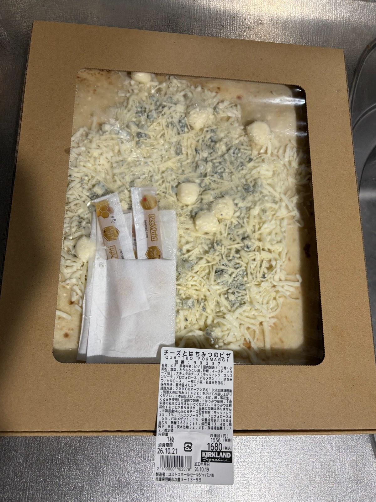
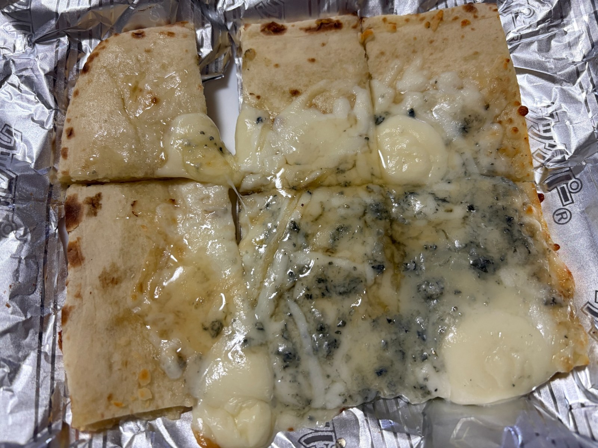

妻と二人で味わった、コストコのチーズとはちみつのピザ
会員制のコストコで「チーズとはちみつのピザ」を購入し、妻と二人でいただきました。価格は1枚1,680円（税込）。モッツァレラ、ゴルゴンゾーラ、プロヴォローネ、パルメザンという4種類のチーズを使ったピザで、別添えのはちみつが付いています。
箱に入った状態でも、たっぷり載ったチーズが目を引きます。細かく刻まれたチーズの間に、大きめのチーズや、ゴルゴンゾーラの青緑色の部分も見えました。肉や野菜などの具材をいろいろ楽しむピザとはまた違い、チーズそのものを味わう一枚です。

今回は、全体の4分の1を焼いて二人で食べました。大きなピザなので、一度に全部を焼くのではなく、食べる分だけ用意しましたが、4分の1でも十分な量でした。
焼く前はそれぞれの形が見えていたチーズも、加熱すると溶けて生地の上に広がりました。切り分けた部分にも溶けたチーズがつながり、焼く前の写真と比べると、見た目が随分変わります。生地に付いた焼き目と、表面に広がるチーズを見ると、食べるのが楽しみになります。

商品ラベルを見ると、製品全体に占めるチーズの割合は、モッツァレラが25.1％、ゴルゴンゾーラが7％、プロヴォローネが4.5％、パルメザンが1.1％。合計すると37.7％になります。見た目にもチーズが多いと感じましたが、表示を確認すると、製品全体の3分の1以上をチーズが占めていることが分かります。食べ応えがあったのも、単に生地の量だけでなく、このチーズの多さも関係していそうです。
妻と二人でゆっくり味わって食べましたが、食べ終わる頃にはお腹いっぱいになりました。全体の4分の1を二人で分けたので、一人分は計算上、ピザ全体の約8分の1。それでも十分に満足できたことを考えると、元の一枚がかなり大きく、食べ応えのあるピザだと実感します。
価格も、全体の4分の1なら420円分、二人で同じ量を食べたとすると一人当たり210円分です。もちろん、これだけで一枚を何回に分けて食べるかが決まるわけではありませんが、今回のように二人で分けてもお腹いっぱいになったことを考えると、量に対するお得感がありました。
チーズを中心にしたシンプルな組み合わせでも、量がしっかりあり、二人で味わう食事として十分に楽しめました。コストコらしい大きさを、箱に入った姿だけでなく、実際に食べた量からも感じた一枚でした。
コストコは、会員向けにさまざまな商品を販売する倉庫型のお店です。食品や日用品などを幅広く扱い、独自ブランドの「カークランドシグネチャー」も展開しています。今回のピザも、そのカークランドシグネチャーの商品です。